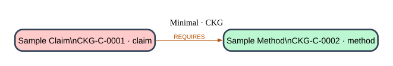

Sample Claim
claim · claim.example
A short claim that depends on one sample method.
Declared edges
- REQUIRES → Sample Method: The claim needs the sample method.
2 concepts / 1 edges
| REQUIRES | 1 |

claim · claim.example
A short claim that depends on one sample method.
method · method.example
A small method node used by the sample claim.